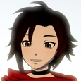
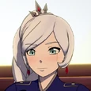
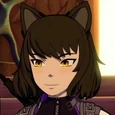
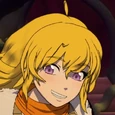

Main Characters

Ruby Rose |
Ruby Rose is the main titular protagonist of RWBY. She is a Huntress, having been trained at the now defunct Beacon Academy. Her weapon of choice is her High-Caliber Sniper-Scythe known as Crescent Rose, which she designed herself. |

Weiss Schnee |
Weiss Schnee is another titular protagonist of RWBY. She is a Huntress, a former student of the now-defunct Beacon Academy, and former heiress of the Schnee Dust Company. Her weapon of choice is a Multi-Action Dust Rapier (MADR) named Myrtenaster. |

Blake Belladonna |
Blake Belladonna is another titular protagonist of RWBY. She is a Huntress, having been trained at the now-defunct Beacon Academy. Her weapon of choice is a Variant Ballistic Chain Scythe (VBCS) named Gambol Shroud. |

Yang Xiao Long |
Yang Xiao Long is another titular protagonist of RWBY. She is a Huntress, having been trained at the now-defunct Beacon Academy. Her weapons of choice are a pair of Dual Ranged Shot Gauntlets, Ember Celica. |